Project 4
[Auto]Stitching Photo Mosaics
Project Overview
This project is about image stitching. In part A, I use manually taken image correspondences to compute a projective transform to bring image pairs into the same coordinate system. Then, using the Laplacian Blending of Project 2, I stitch images together. There are two main approaches I took when mosaicking together multiple images, one of which was very painful and eventually unsuccessful, and the other of which was clean and easy due to math (See A.4 for more details). The lesson here is that things are easier when you use your brain.
A Image Warping and Mosaicking
A.1: Shoot the Pictures
Images I took:
Case 1
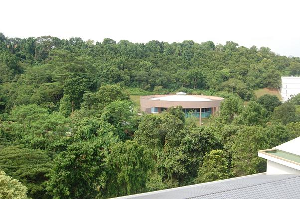
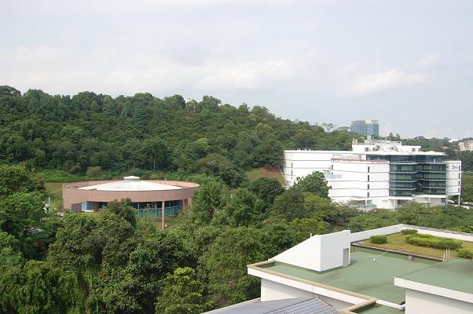
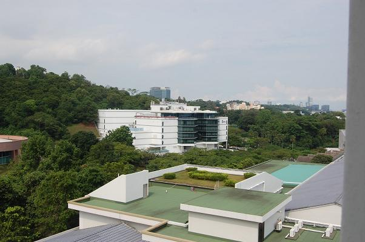
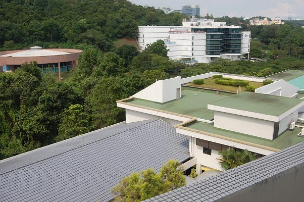
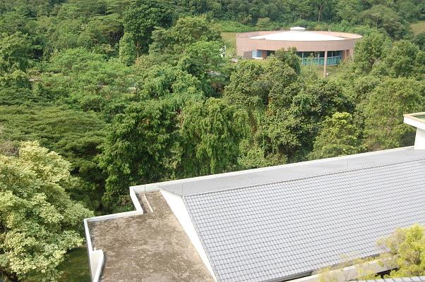
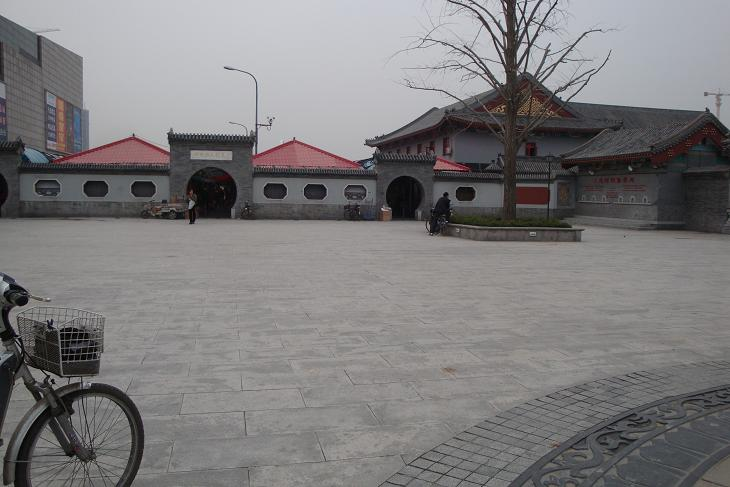
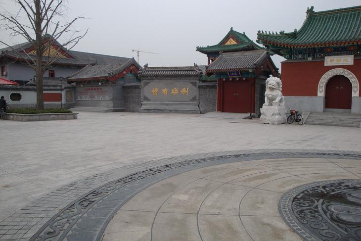
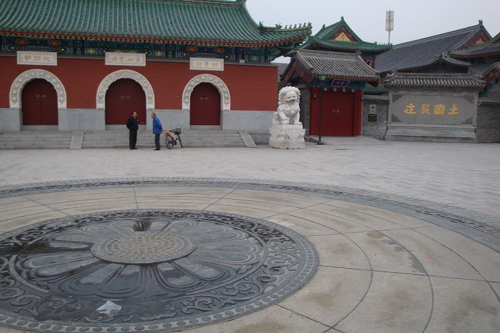
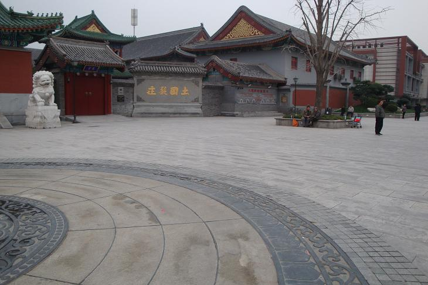
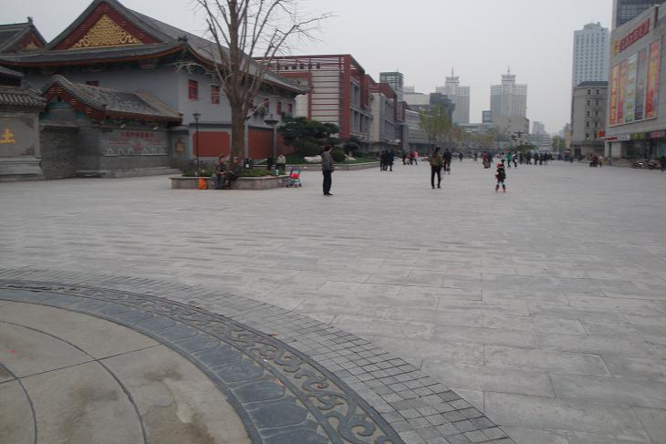
A.2: Recover Homographies
First, let's see image correspondences. I manually recorded correspondences using pixspy.com
From our known values, corresponding points \((x_1, y_1)\) and \((x_2, y_2)\), we now want to set up a system of equations to solve for H. Expanding (1), we get
\[\begin{align} ax_1 + by_1 + c &= wx_2 \\ dx_1 + ey_1 + f &= wy_2 \\ gx_1 + hy_1 + 1 &= w \end{align} \]Substitute \(w\) in and move everything to the left
\[\begin{align} ax_1 + by_1 + c - gx_1x_2 - hx_2y_1 - x_2 &= 0 \\ dx_1 + ey_1 + f - gx_1y_2 - hy_1y_2 - y_2 &= 0 \end{align} \tag{2}\]From (2), we get two linear equations from each corresponding point pair \((x_1, y_1)\) and \((x_2, y_2)\). With 8 unknowns, that means we require at least 8 equations, or 4 point pairs. To make our homography more accurate, we can use >4 point pairs and compute a Least Squares (with some rearranging, of course.
\[\begin{alignat}{9} &ax_1 + &by_1 + &c - &&&&gx_1x_2 - &hx_2y_1 &= x_2 \\ &&&&dx_1 + &ey_1 + &f - &gx_1y_2 - &hy_1y_2 &= y_2 \end{alignat} \tag{3}\]And for Least Squares, let the \(x_1, y_1, x_2, y_2\) be columns, with each row being a correspondence pair, so we make our matrix \(A\) by stacking the \(A_1\) and \(A_2\) matrices.
\[H_{flat}=\begin{bmatrix}a&b&c&d&e&f&g&h\end{bmatrix}^T\] \[\begin{align} A_1 &= \begin{bmatrix} x_1 & y_1 & 1 & 0 & 0 & 0 & -x_1x_2 & -x_2y_1 \end{bmatrix} \qquad b_1= \begin{bmatrix}x_2\end{bmatrix}\\ A_2 &= \begin{bmatrix} 0 & 0 & 0 & x_1 & y_1 & 1 & -x_1y_2 & -y_1y_2 \end{bmatrix} \qquad b_2= \begin{bmatrix}y_2\end{bmatrix} \end{align}\]Finally, reshape our recovered \(H_{flat}\) into H. Don't forget to append the 1 beforehand!
A.3: Warp the Images
Now, let's apply our computed H to rectify images. On the left side, we use Nearest Neighbor inverse warping, and ond the right, we have Bilinear inverse warping.
As shown above, bilinear warping produces smoother looking images!
A.4: Blend the Images into a Mosaic
Finally, we have image warping. Before anything else, let us first set a rule on our input. Image corespondence pairs must be passed in an order where they can form a chain, i.e. any consecutive image pair correspondences (im1, im2) must have it so that im2 of the previous pair is im1 of the next pair.
As I said in the project overview, my first approach was very tedious. Essentially, I made mosaic2Images function that successfully stitched two images by warping im1 to im2 coordinates, padding im2, then blending the two images. This can then be a helper function for mosaicMultipleImages, which takes advantage of the property that im2 itself is unchanged in the mosaicked image pair. For three images A, B, C with correspondences AB and BC, we would warp A to B's coordinate system. Then, we shift the point correspondences of B in BC depending on the padding applied to B when stitching A and B. These shifted points can then be used to compute the proper homography for AB to C coordinates.
This method is primarily exhausting because of all the tracking in between. Also, my implementation worked to stitch together 3 images correctly, but breaks on 4 images. While counting pixels, I realized this was because my shifted points used to compute H for ABC onto D was incorrect—naturally, H was also incorrect. I was unable to trace the issue, and ended up pivoting. Regardless, here is an image stitched with this incremental stitching method.
The other approach is math heavy, but incredibly clean after reasoning everything through. Here, we warp each image onto a global frame. For convenience, we set the first im1 of all correspondence pairs as the base of the global frame.
As earlier, we dictate that correspondence pairs must be chainable. This allows us to easily computing homographies back to our first image coordinate system. Again, let us use a chain of images, A, B, C..., and let \(H_X\) be the homography from image X to image A, and let \(H_{XY}\) be the homography from X coordinates to Y coordinates.
From our correspondences, we have
Note that
\[H_{XY} = H_{YX}^{-1} \qquad H_{XZ} = H_{XY} H_{YZ} \qquad H_X = H_{XA}\]Combining the above, we can now calculate
\[H_A = \begin{pmatrix} 1 & 0 & 0 \\ 0 & 1 & 0 \\ 0 & 0 & 1 \end{pmatrix} \] \[\begin{alignat}{2} H_B &= H_{BA} &&= H_{AB}^{-1} \\ H_C &= H_{CB}H_{BA} &&=H_{BC}^{-1}H_B \\ H_D &= H_{DC}H_{CB}H_{BA} &&=H_{CD}^{-1}H_C \end{alignat}\] It should now be evident how to calculate the H matrices to reach A coordinate space.
There is, however, one more complication. Some images may be warped into negative coordinates! That's why we must also compute an overall canvas size. This is quite easy—simply take the corners of each image, warp into A coordinates, and find the bounding box of these points. Also, define the translation transformation using the min x and y values, and apply to our homographies.
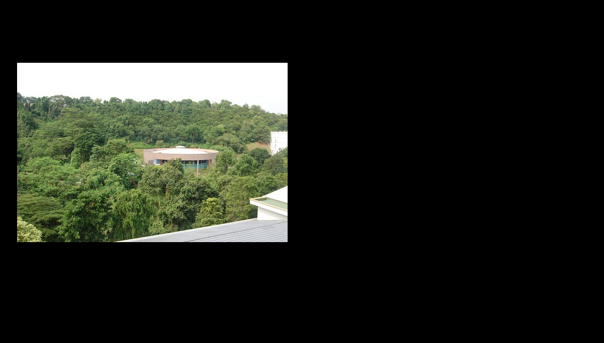
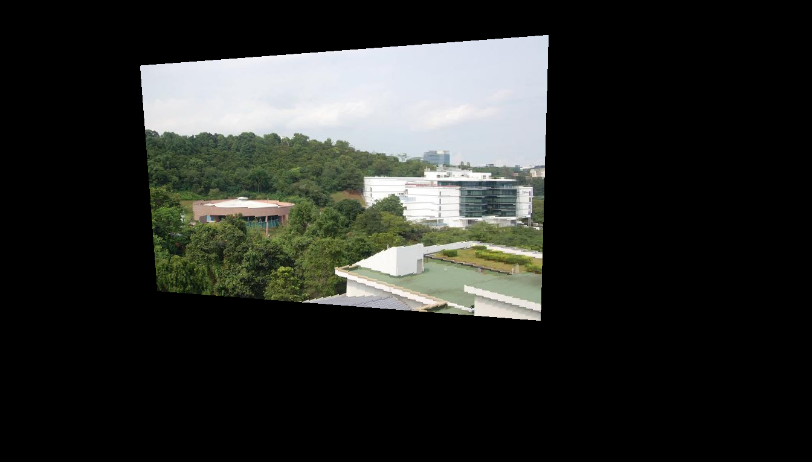
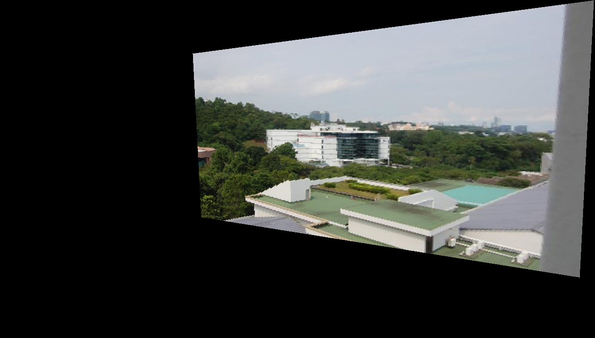
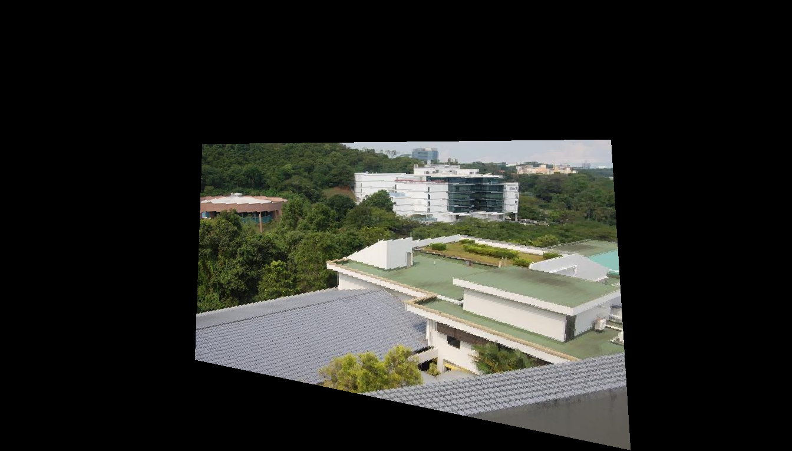
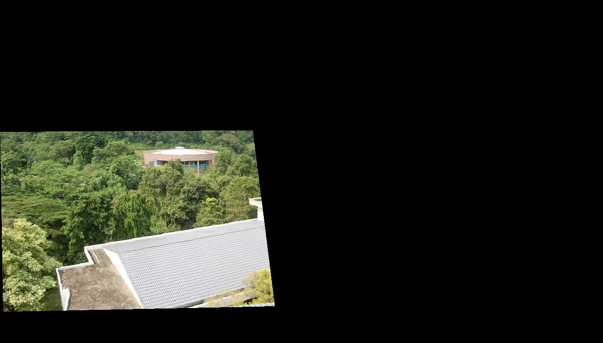
With warping out of the way, we can talk a little about blending. Here, I used the Laplacian Stack Blending implemented in Project 2. Distance transforms are used to create a mask.
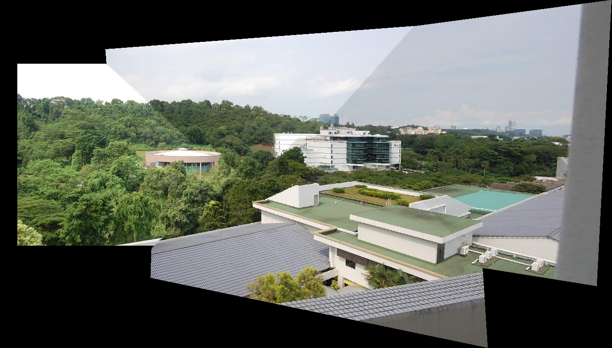
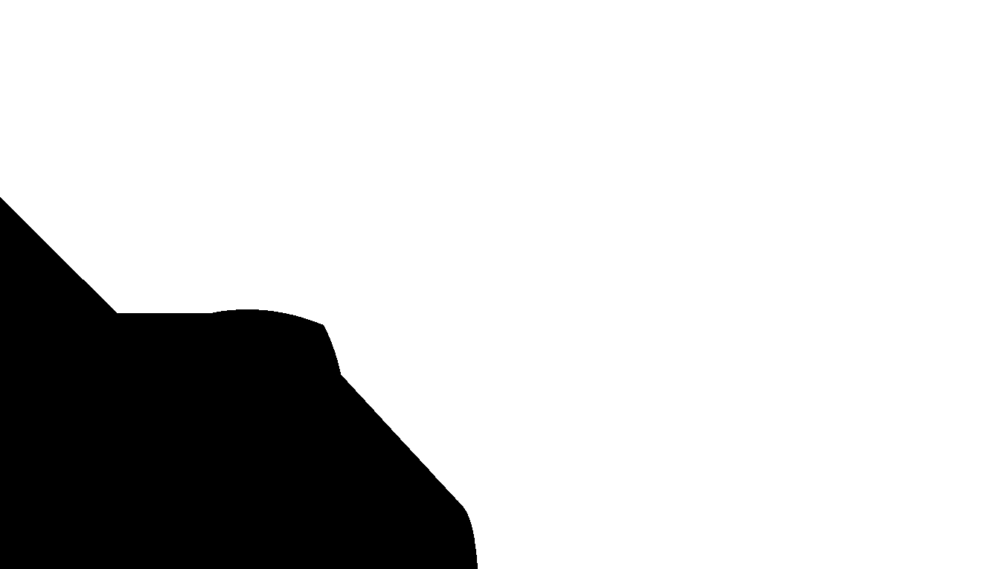
Alright, let's see some stitched images!
Case 1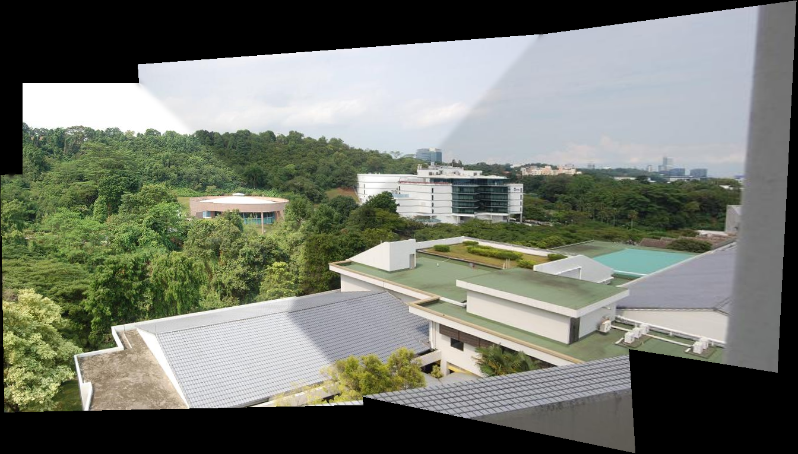
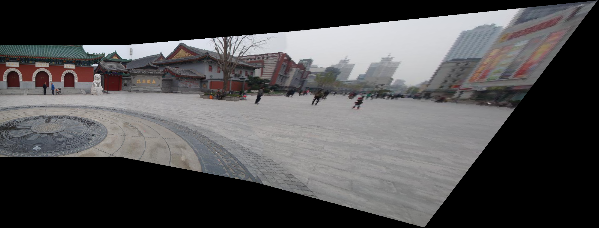
B NOT IMPLEMENTED